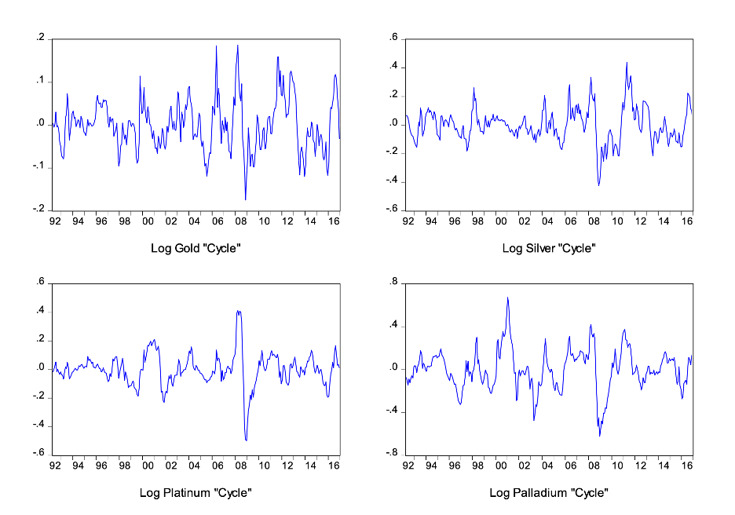
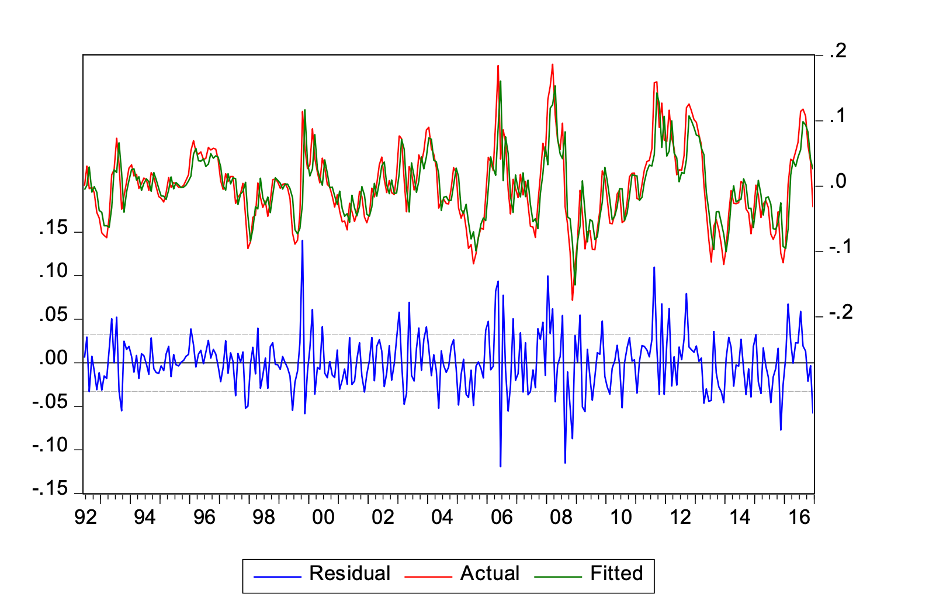
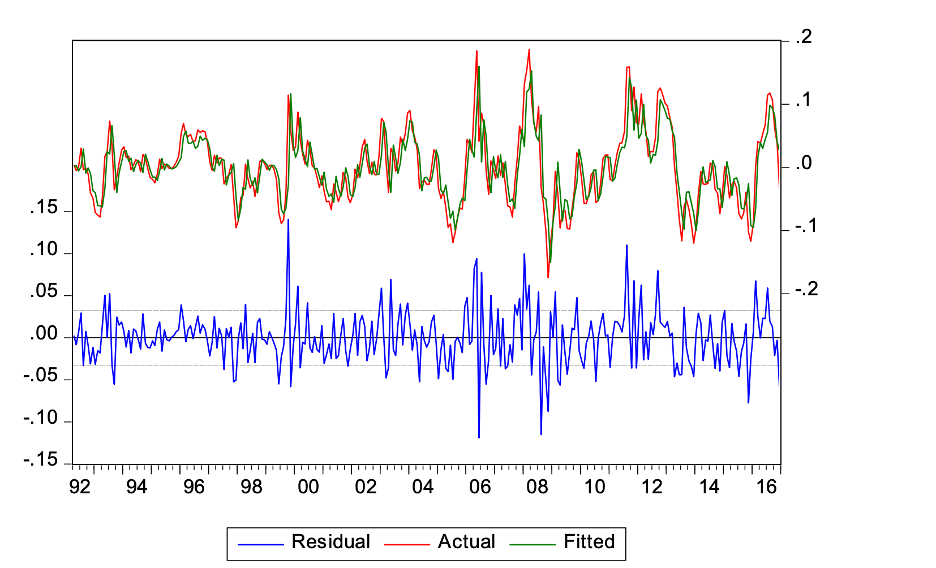
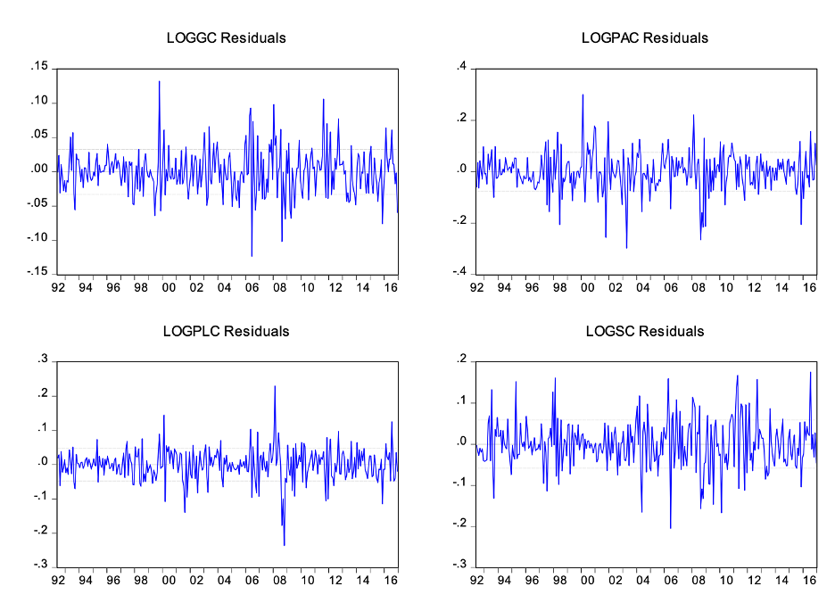
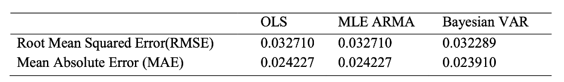

Introduction
In recent years, the price of gold is growing dramatically. Gold is considered as a good instrument that connects finance with macroeconomic (Pierdzioch et al., 2014a, b, as cited in Hassani, Silva, Gupta & Segon, 2015, p.4141). One of its key advantages is that it can be resold without any loss of value (Shafiee & Topal, 2010, p.178).Given its critical role in the global economy, if we could use appropriate methods to forecast the price of gold, it would provide the utmost benefits to our daily life (Hassani, Silva, Gupta & Segon, 2015, p.4142). This blog explores three forecasting models to predict gold prices—OLS (Ordinary Least Squares), MLE ARMA (Autoregressive Moving Average), and Bayesian VAR (Vector Autoregression),followed by the use of Root Mean Square Error(RMSE) and Mean Absolute Error(MAE) to assess the accuracy of the forecasts.
Data analysis
We will use data from Kitco Metals Inc., covering the period from 1992 to 2016, which includes gold and other precious metals such as silver, platinum, and palladium. The mean prices for gold, silver, platinum, and palladium are $704.94/ounce, $11.64/ounce, $891.25/ounce, and $392.50/ounce, respectively, with corresponding standard deviations of $461.95/ounce, $8.86/ounce, $485.65/ounce, and $392.50/ounce. To ensure comparability and stationarity of the data, we apply logarithmic transformations and use the HP filter. The price series are plotted in Figure 1, where no clear trend is visible in any of the price series. After applying these transformations, the data are now stationary and will be used in the subsequent analysis.
Figure 1 : HP filtered Log Prices of Gold, Silver, Platinum and Palladium from Apr. 1992 to Dec. 2016 
Three Forecasting Models: From Basic to Advanced
Let’s break down the three forecasting methods we used, starting from the simplest to the more complex.
OLS (Ordinary Least Squares):
The model for the OLS AR(p) is
\[ \log y_t = \alpha_0 + \alpha_1 \log y_{t-1} + \dots + \alpha_p \log y_{t-p} + \epsilon_t \]
OLS is one of the most straightforward methods in statistics. In essence, it assumes that the price of gold follows a stable trend, and we try to predict future prices based on past values. Think of it as using the history of gold prices to forecast what might happen next, assuming the pattern remains consistent. OLS is simple and easy to understand, making it a great starting point for forecasting. However, it doesn’t account for more complex patterns or sudden changes in the market.
ARMA (Autoregressive Moving Average):
The model for the ARMA(p, q) is
\[ \log y_t = \beta_0 + \beta_1 AR(1) + \dots + \beta_p AR(p) + \beta_{p+1} MA(1) + \dots + \beta_{p+q} MA(q) + \gamma_t \]
The ARMA model takes things up a notch. It not only looks at past prices but also accounts for random shocks or fluctuations. Think of it as trying to predict gold prices not just based on previous values, but also on the ups and downs that can happen in the market over time. ARMA is great for capturing short-term fluctuations and randomness in the data. Hooever, it doesn’t handle long-term trends as well as other models.
Bayesian VAR (Vector Autoregression):
The model for Bayesian VAR is
\[ \log y_{i,t} = c + a_1 \log y_{1,t-1} + \dots + a_p \log y_{1,t-p} + b_1 \log y_{2,t-1} + \dots + b_p \log y_{2,t-p} \]
\[ + c_1 \log y_{3,t-1} + \dots + c_p \log y_{3,t-p} + d_1 \log y_{4,t-1} + \dots + d_p \log y_{4,t-p} + \mu_t \]
The Bayesian VAR model is the most advanced of the three. It looks at not only the price of gold but also other factors, like the prices of silver, platinum, and palladium. It uses a “Bayesian” approach, meaning it updates its predictions as more data becomes available.
Visual Comparison: Actual vs. Predicted Gold Prices
Let’s take a look at how well each model performs visually. Below, you can see the actual gold prices (represented by the blue line) compared with the predicted prices (fitted lines) from both the OLS and ARMA models. The Figure 2 shows that in the OLS model, the fitted lines follow the same patterns as the actual prices. Similarly, Figure 3 demonstrates that in the ARMA model, the fitted lines also follow the same patterns as the actual prices. For the Bayesian VAR model, Figure 4 shows that the residuals for each variable are randomly distributed around zero, indicating that the model has effectively captured the trends in the data without any significant bias.
Figure 2: Residual, Fitted and Actual values for the OLS model
Figure 3: Residuals, Fitted and Actual values for the ARMA MLE mode
Figure 4: Residual for the Bayesian VAR Model
Comparing the Performance of These Models
Now, let’s quantify accuracy of each model using two key metrics: Root Mean Square Error (RMSE) and Mean Absolute Error (MAE). These metrics measure the deviation between predicted values and actual gold prices—the lower the values, the more accurate the model’s predictions.
Table 1: The Root Mean Squared Error & Mean Absolute Error for the three methods From the above table, we see that all three models perform similarly in terms of their RMSE and MAE values. Both the OLS AR(2) and MLE ARMA models have identical RMSE (0.03271) and MAE (0.024227), while Bayesian VAR shows slightly smaller values: RMSE (0.032289) and MAE (0.023910), with differences of about 0.001. Therefore, Bayesian VAR slightly outperforms the others, with the lowest RMSE and MAE values, indicating better accuracy in predicting gold prices.
Conclusion: Which Model Should You Use?
In the end, all three models do a good job at forecasting gold prices, but the Bayesian VAR model stands out as the most precise. However, if you’re just getting started or need a simpler method, OLS or ARMA may be a good fit. Understanding how these models work and their strengths can help you choose the right tool for your financial forecasting needs.
References
Data source: Kitco Metals Inc. (www.kitco.com)
Wang, H., & Sun, B. (2017). Forecasting the price of gold with different methods: OLS, MLE ARMA, and Bayesian VAR. Unpublished manuscript.
Hassani, H., Silva, E. S., Gupta, R., & Segnon, M. K. (2015). Forecasting the price of gold. Applied Economics, 47(39), 4141-4152. doi:10.1080/00036846.2015.1026580
Shafiee, S., & Topal, E. (2010). An overview of global gold market and gold price forecasting. Resources Policy, 35(3), 178-189. doi:10.1016/j.resourpol.2010.05.004